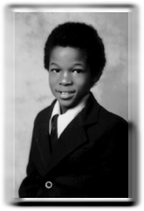

| n u c l e u s:: |
|
|  |
name:: charles ferris noel II aliases:: "monochrome," "Cr02," "archetype," "fuzzy logic?!," "9th circle," "a.mbience r.ecovery s.ystem" (with todd sines) turntable specialties:: hard-beat jungle, heavy techno, hard house. production specialties:: complex jungle, techno, abstract hip-hop, abstract ambient. other specialties:: currently presides over the 21/22 corporation, as well as doing graphic design, computer programming, and teaching beginning drawing classes at OSU. |
|
info:: charles noel came to the central ohio area by way of trenton, new jersey. his musical background was informed by his involvement in the electro/breakdance crus of the early '80s. inspired by what he saw and heard around him (especially the DJ wizardry of GRANDMASTER FLASH) he began spinning at the age of 13. his tastes slowly evolved as electro became the more familiar hip-hop we know today, but at the same time his appreciation for the electronic elements of electro never wavered, and his interest in the house music of chicago, detroit, and new york, seemed perfectly natural to him--despite the resistance of friends who couldnt see the black connection to house and techno. at some point charles began to see the connection between hip hop and the harder edges of industrial as well, including bands such as MINISTRY (whose "flashback" song from 1988 was a revelation) and MEAT BEAT MANIFESTO, whose dirty, cut-up approach he identified with strongly. this interest led him to start some experiments of his own (under the name Cr02), and a concept of using very minimal technology to create music became part of a larger ideal: the 21/22 corporation. soon, he became involved with todd sines and titonton's BODY RELEASE project, as the band's resident DJ and musical contributor. his work with B/Re, as well as his own newfound appreciation of the hip-hop/industrial fusion of "breakbeat" (now known as jungle), especially as exemplified in the music of the REINFORCED label, led him down the path towards creating his own jungle. in 1994 charles took the 21/22 idea a step further, by initiating the FUSION tape compilations which highlighted music made by ele_mentals and others. in late 1994 charles took the 21/22 corporation to an even higher level, to vinyl, mastering the "reconnaissance" ep under the name MONOCHROME and pressing 500 copies which were distributed early in 1995. by the summer of 1995 charles mastered another jungle ep as FUZZY LOGIC?!, but the technical difficulties of vinyl production left him with an ep that he could not distribute. soon thereafter, despite a flurry of jungle compositions completed in late '95-early '96, charles set jungle aside for the time being and began to concentrate on techno/traxx (which of course, was equally part of his own background). the first TRACE ELEMENTS was the result of this new emphasis on techno, reuniting the B/Re members on a record for the first time, and was the first unqualified success by the 21/22 corporation, with several other releases in the wings. recent activities have included a renewed emphasis on DJing, several live shows, and the preparation of his own techno ep entitled TIME DILATION EFFECT which is scheduled to be released sometime in the spring of 1997. at the same time, he is pursuing a graduate degree in media arts at the ohio state university. discography (title/artist name/label/date):: "reconnaissance" ep / monochrome / 21/22 corp / jan 1995 4-track jungle ep - "fuzzy logic?!" ep / produced by monochrome / 21/22 corp / aug 1995 4-track experimental jungle ep - "can't let go (ed luna's suggested serving)" / Cr02 / 21/22 corp / sep 1996 one of four artists on the "trace elements" techno compilation ep unreleased projects (forthcoming):: "time dilation effect" experimental techno ep |